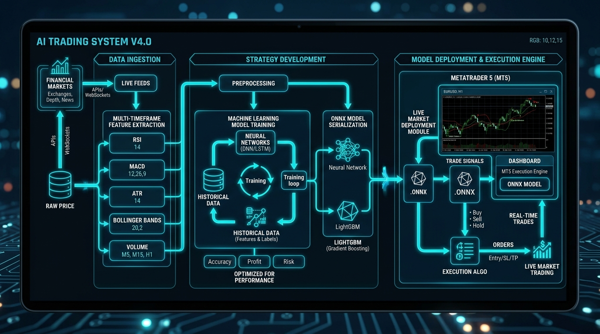

End-to-End Deep Quantitative Architecture
The GoldSniper AI trading system solves the core vulnerability of single-timeframe trading bots by deploying a Hierarchical Multi-Scale Regime Classification Architecture. It trains three specialized machine learning models running concurrently to classify gold market dynamics into three discrete states:

Multi-Scale Model Hierarchy
To eliminate single-timeframe noise and prevent lookahead bias (data leakage), higher timeframe bars are calculated strictly on completed historical candles:
Model 1: Micro Engine (Intraday)
Syncs H1 (Macro Trend) + M15 (Session Momentum) + M5 (Execution Trigger) for high-frequency scalping and precision trend continuation.
Model 2: Swing Engine (Session Flow)
Syncs H4 (Structural Swing) + M30 (Cycle Flow) + M15 (Momentum Filter) for medium-term intraday swing entries.
Model 3: Macro Directional Bias
Syncs D1 (Institutional Bias) + H4 (Trend Anchor) + H1 (Trigger) to anchor and govern the safety of sideway recovery baskets.
Feature Engineering & Walk-Forward Validation
Over 42 mathematical and statistical features are engineered across momentum, volatility, trend strength, and candle microstructure:
| Category | Indicators & Mathematical Formulations | Quantitative Purpose |
|---|---|---|
| Momentum | RSI (7, 14), MACD Histogram (EMA12 - EMA26), Rate of Change (ROC5, ROC20) | Captures directional velocity and extreme momentum exhaustion. |
| Trend Alignment | Normalized EMA Distance: (Close - EMA200)/ATR14, EMA Slopes, ADX & DI+/DI- | Identifies multi-timeframe trend alignment and strength without curve-fitting. |
| Volatility & Dispersion | Normalized ATR: ATR14/Close, Bollinger Band Width, Bollinger %b | Detects volatility expansion (breakout setups) vs contraction (sideway range). |
| Microstructure | Wick-to-Body Rejection Ratio, Log Returns, High-Low Range to ATR Ratio | Detects liquidity sweeps, institutional absorption, and false pinbar breakouts. |
Purged & Embargoed Time-Series Cross-Validation
Zero Data LeakageStandard K-Fold cross-validation causes severe overfitting on financial time-series due to serial autocorrelation. We implement Purged Group Time-Series Split with embargo periods across 8+ years (2018–2026) of tick and M5 historical gold data.
Zero-Latency ONNX Native C++/MQL5 Runtime
Unlike traditional Python trading setups that incur 50–200ms network latency through WebSockets or REST APIs, the trained LightGBM models are exported to ONNX (Open Neural Network Exchange) format and executed in-memory directly inside the MetaTrader 5 runtime:
Sub-Millisecond Inference
Zero inter-process communication overhead. Inference executes in under 0.5ms per tick inside the MQL5 engine.
Dual Execution Engine
Trend HFT Scalper with dynamic ATR TP/SL alongside a Prior-Trend Sideway Martingale Grid equipped with AI Reversal Killer.
5-Pillar Defense Framework
Daily Circuit Breakers (Soft & Hard locks), High-Impact News Event Blackout Shield, and Global Basket Profit Locks.